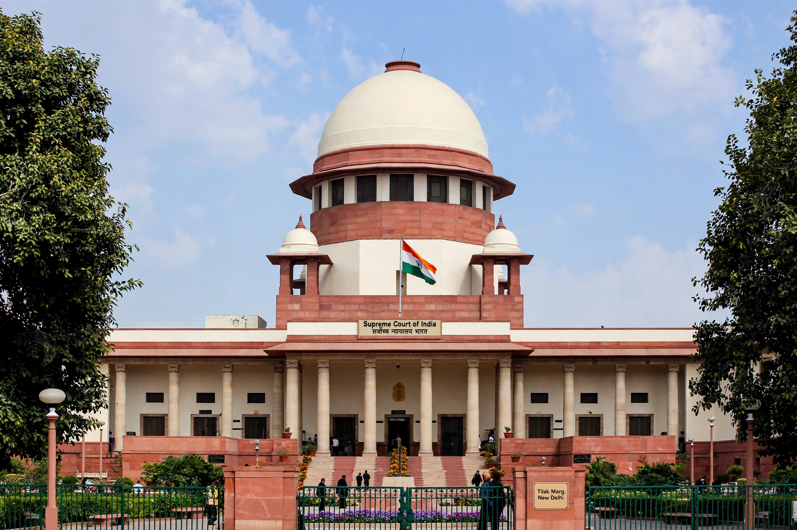

From Wikipedia, the free encyclopedia
| Kesavananda Bharati v. State of Kerala | |
|---|---|
 | |
| Court | Supreme Court of India |
| Decided | 24 April 1973 |
| Citation | AIR 1973 SC 1461; (1973) 4 SCC 225 |
| Bench | 13 judges (largest ever) |
| Outcome | Basic structure doctrine established; 7:6 majority |
Kesavananda Bharati Sripadagalvaru v. State of Kerala ([1973] 4 SCC 225) is a landmark decision of the Supreme Court of India that established the basic structure doctrine, which holds that the Parliament of India may amend the Constitution of India under Article 368 but may not alter its "basic structure" or essential features. It is among the most consequential constitutional judgments in the world.
His Holiness Kesavananda Bharati, head of the Edneer Mutt in Kasaragod, Kerala, challenged the Kerala government's attempts to impose restrictions on the management of the mutt's property under the Kerala Land Reforms Act of 1963. The case grew into a fundamental challenge to Parliament's power of constitutional amendment, following earlier rulings in Golaknath v. State of Punjab (1967), which had held that fundamental rights could not be amended.
A bench of thirteen judges — the largest in the Court's history — heard arguments for 68 working days, the longest hearing in the Court's history at the time. The petitioners were led by Nani Palkhivala. On 24 April 1973, by a narrow 7:6 majority, the Court upheld Parliament's power to amend any part of the Constitution, including fundamental rights, but ruled that this power did not extend to damaging or destroying the Constitution's basic structure. Chief Justice S. M. Sikri listed features including the supremacy of the Constitution, the republican and democratic form of government, its secular character, separation of powers, and the federal character of the Constitution.
The judgment was delivered on the eve of Chief Justice Sikri's retirement; the government superseded three senior judges to appoint Justice A. N. Ray as his successor the following day, an episode widely attributed to the verdict. The basic structure doctrine was later invoked to strike down parts of the 39th Amendment during the Emergency in Indira Nehru Gandhi v. Raj Narain (1975), and remains the cornerstone of Indian constitutional law, influencing courts in Bangladesh, Pakistan, Kenya and elsewhere.
See also: Constitution of India · Supreme Court of India · Fundamental rights in India